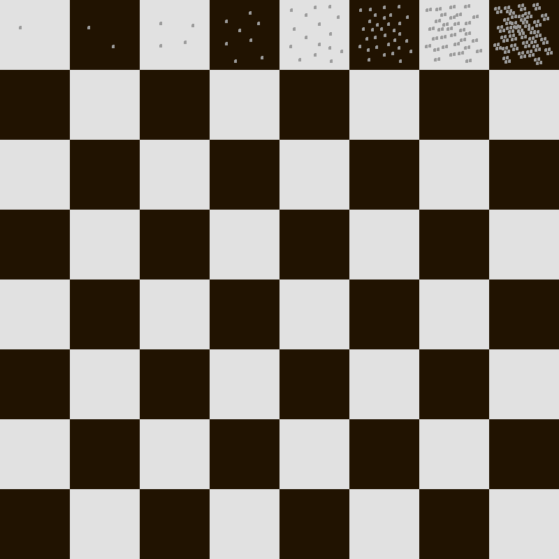
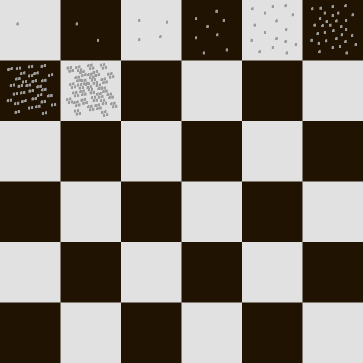
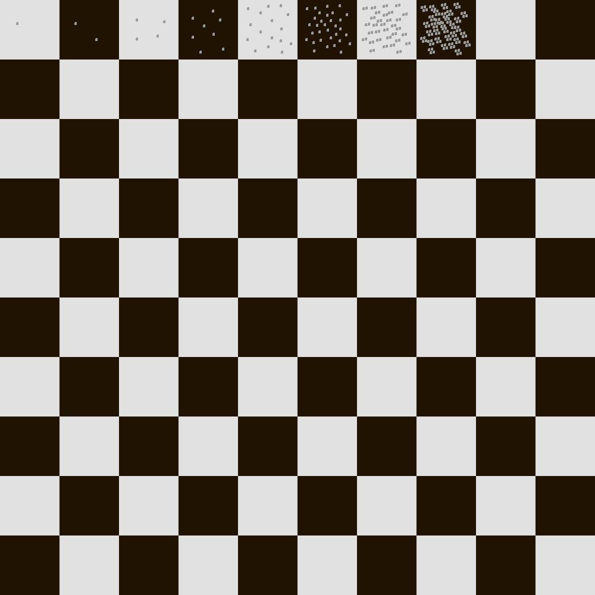

2. Accelerating Progress
2.1 Exponential Functions
Instead of jumping straight into developing new ideas, I’d first like to write about the future we can expect—without a pessimistic slant, but also without rose-colored glasses.
My goal is to outline the environment in which the ideas I present later in this book will operate.
The opportunities the future offers us, as well as the challenges it poses, form the context in which I design new societal structures. Without understanding this context, any design would be blind, unaware of whether it can endure in a changing world or not.
Only once we have a useful vision of the future can we begin searching for functional utopias.
In Chapter 1, I argued that our expectations for the future are too bleak. But what should we expect from it instead?
The future will be so different that the journey towards it will feel like exploring an alien world. To even have a chance of understanding it, we must first grasp how exponential functions behave.
Why? Because some of the most important processes transforming Earth’s ecosystem and human society are exponential (for example, in social networks, as I mentioned in Chapter 1). And because we need to model these processes into the future to gain an idea of how they will change the world and humanity.
But understanding exponential functions isn’t easy, because they are not intuitive at all. The fact that this is a problem has been known for so long that there’s even a legend about it to serve as a warning...
This is the legend of the rice grain and the chessboard7:
The inventor of chess presents the game to his king. The king is delighted and promises the man any reward he desires. The inventor asks for rice grains: 1 grain on the first square, 2 grains on the second, 4 grains on the third, and so on. On each chess square, double the number of grains from the previous one.

The chessboard has 64 squares. How much rice would be needed to fulfill the reward?
The king was a wealthy man and thought the request modest. He was mistaken. The wish could not be granted. How much rice do you think would be required?
The correct answer is that for these 64 squares, all of Germany would need to be covered with a 1-meter-high layer of rice grains!
Calculation of rice quantity, 8×8 chessboard8: To verify this yourself instead of just accepting it as a statement, let’s switch from the number of grains to their weight.
A single rice grain weighs about 0.03g. Now we can use a calculator and, for 264 × 0.03 / 1,000,000, obtain the number of tons of rice: approximately 553 billion!
Explanation of the formula: 2 to the power of (number of squares) × (grams per rice grain) gives the weight of the rice in grams. Divided by one million, it’s the number of tons.9
Why can’t we estimate that without using a calculator? That’s because our brains don’t stand a chance!
Let’s suppose the chessboard were smaller—only 6×6 squares.

How much rice would the doubling rule yield this time?
This time, the doubling rule would only produce about one warehouse full of rice.
Calculation of rice quantity, 6×6 chessboard, number of annual yields:
same formula as before: 236 × 0.03 / 1,000,000 = 2,060 tons.
The global annual rice production is approximately 500 million tons.
Thus, the 8×8 chessboard (553 billion tons of rice) represents the entire world's output for about 1,000 years.
On the other hand, the 6×6 chessboard (2,060 tons of rice) represents 0.0004% (4 millionths) of the annual rice production.
So, still a lot, but something that an ancient king of a great empire could certainly gift as a reward.
Now, let's go in the opposite direction and imagine a 10×10 chessboard.

This time, the doubling rule yields rice with six times the mass of the entire Earth!
Calculation of rice quantity, 10×10 chessboard:
same formula as before: 2100 × 0.03 / 1,000,000 = 38 × 1021 tons.
The Earth has a mass of about 6 × 1021 tons.
(38 × 1021) / (6 × 1021) = 6.3 Earth masses
How is our poor brain supposed to estimate this? It is presented with a chessboard and a doubling rule. Without doing the math, there is no chance to intuitively estimate whether the resulting mass would be a warehouse full, deep snow covering all of Germany, or more than the entire world! No chance—the only thing that helps is to calculate!
The one thing that should hopefully become clear from this example is: If you let an exponential function grow unchecked, it doesn't matter how tiny it starts (a single grain of rice). If you wait long enough, make the chessboard large enough, it will devour the entire Earth.
Now, of course, this is precisely the crucial point: In a real system, it doesn't remain an unchecked exponential function forever. At a certain point, growth will be slowed and eventually stopped by resource scarcity.
Therefore, I consider it essential to move away from focusing on the current state (a single grain of rice on the first chessboard square). Once exponential growth has been recognized, one should instead look at the growth limits (something that doesn’t exist in the chessboard example).